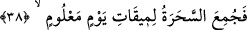

Bulunduğun yeri baş köşe sanıyorsun ama kapıda kalmışsın
Dünya padişahları, damarsızlıkları yüzünden
Kulluk şarabının kokusunu alamazlar
Yoksa Edhem gibi, kendilerinden geçerek
Hiç beklemeden saltanatı bir yana atarlardı
Fakat Allah, bu dünyanın varlığını sürdürmesi için
Onların gözleriyle ağızlarını mühürledi
Böylece taht ve taç onlara tatlı gelir
Dünya hükümdarlarından haraç almayı düşünürler
Aldığın haraçla kum gibi altın biriktirsen de
Sonunda o senden geriye miras kalır
Mal mülk ve altın senin canına yoldaş olmaz.
Öyleyse altını ver, görebilmek için sürme al
Bu dünyanın dar bir kuyu olduğunu gör
Ki Yusuf gibi o ipi tutabilesin
Kuyuda göz yanılmaları olur.
En azından, taş altın gibi görünür
Oyun sırasında çocuklar kendilerini oyuna kaptırınca
Çömlek parçaları onlara altın ve mal gibi görünür
38. Böylece sihirbazlar belli bir günün tayin edilen vaktinde biraraya getirildi.
“Böylece sihirbazlar belli bir günün tayin edilen vaktinde bir araya getirildi.” Yani
Fir’avn, sihirbazları toplamak için şehirlere görevliler gönderdi ve toplandılar. Büyü
için kullandıkları iplerin ve değneklerin çokluğunun da delâlet ettiği gibi, sayıları
yetmiş veya yetmiş iki bindi. Taberî’nin rivâyetine göre İskenderiye’de toplandılar.
“
” Bir iş için belirlenen zamandır. Yani onlar belirlenen bir günün tâyin edilen
saatlerinde bir araya getirildiler. O da ziynet gününün kuşluk vakti idi. O gün onların
bayram günüydü. Her yıl o günde süslenirler ve bir araya toplanırlardı.
İbn Abbâs (r.anhümâ)’dan rivâyete göre o gün yılın ilk günü ve cumartesi idi. O gün
Ferverdîn ayının ilk günü olan neyrûz günüydü. Neyrûz, Kıbtî dilinde ‘su yükseldi,
Nil’in suyu taştı’ anlamınadır. Acem dilinde ‘yeni gün’ anlamında adı nevrûz’dur. O gün
onlara göre yeni yılın başlangıcı kabul edilir.
Herkesin gözü önünde hak ortaya çıksın ve bâtıl yok olsun, olanlar da bütün diyarlara
yayılsın diye “Buluşma zamanınız, bayram günü, kuşluk vaktinde insanların
toplanma zamanı olsun.” (Tâhâ, 20/59) âyetinde Mûsâ (a.s.) onlara bayram gününün
kuşluk vaktini toplanma zamanı tayin etti. Fir’avn da büyük bir kalabalığın huzurunda